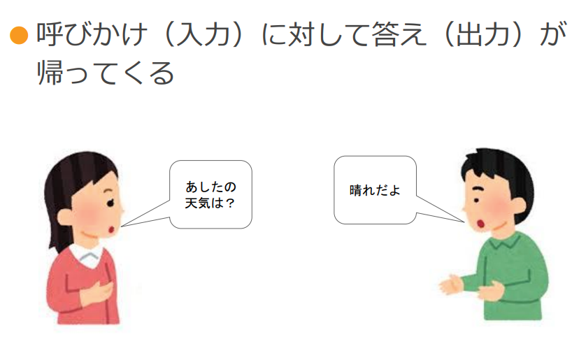

What you'll learn
- 問題を見つけ出し、課題を設定できる
- ID/パスワードの意味を理解し適切に管理する
スライド | 指導者 |
 | 入力に対して出力が返ってくことを双方向性と言いましたね。 |
また、GoogleMapのように地図を出力するサービスがあります。 地図は静止画というメディアに分類されます。 皆さん覚えていますか？ |
つまり、「何かの入力（問いかけ）に対して、いろいろな出力（返事）がある」のが双方向性です。
そして出力されてくる地図やショッピングサイト、動画共有サイト、ゲームなどがコンテンツにあたります。
- 問題点を見つけ出し、課題を設定して みよう
- ID/パスワードの意味を理解し適切に管理しよう
インターネットを利用したコンテンツを使って、何か不便なことや、困ったことを解決できないだろうか考えてみましょう。
例えば、練習試合で他の学校へ行くときや、初めて行くお店などはGoogleMapなどを使って道順を調べますね。私たちは「ちょっとした困った」をいろいろなアプリなどでよく調べ解決しています。
スライド | 指導者 |
教科書を見ると、色々な問題発見の例が挙げられています。 その中で1つの例として「友達との情報のやり取りができない」に着目してみましょう。 学校の中でクラスメイトと情報のやり取りをするとき、どんなことに困りますか？→ワークシートに記入してみよう 今はコロナ禍で一ヶ所に大勢の生徒が集まると密になってしまうので、集会が開けないですね。 口頭で伝えるのも限界がありますね。また、連絡網などを使うのもメールアドレスや電話番号を知らない人がるとダメですね。 | |
この課題を解決するにはどうすれば良いと思いますか？ →LINE、Twitterなどでメッセージを送る.... そうですね、SNSを利用すればいろいろな人に連絡ができそうですね。 でも、少し問題がありませんか？全てのクラスメイトに連絡取れますか？ →電話番号知らない、携帯持っていない、LINE登録していない、アカウントが作れない（13歳未満...など） →文章、写真などそれぞれ得意/不得意なメディアが存在する | |
↑ | これらを考慮して、Webベースのチャットツール（掲示板）を作ってみよう。 これなら携帯電話を持っていなくても、特別なアプリがインストールできなくてもGIGA端末のブラウザからでも参加できます。 |
チャットツールを作るにあたってどんな情報をやり取りしたいですか？ やり取りする必要がありますか？→ワークシートに記入してみよう すでにLINEや電子メールで実現している機能もありますが、ここではこれらの中から、文字や写真を取り上げます。 これらをやり取りできるツールをプログラミングして作ってみましょう。 |
チャットツールを使ってクラスメイトと連絡を取る方法を作りましょう。
生徒に初期パスワードを配布します。
ブラウザを開いて「プログル技術」と入力して、検索しましょう。 検索結果をクリックします。 | |
メインメニューに移動したら、生徒の「新規登録」をクリックします。 →一番最初の利用はログインからはできません。 | |
画面遷移したら、クラスID、出席番号、初期パスワードを入力させます。 →繰り返しますが、一番最初は「ログイン」ではダメです。「初期登録」です。 | |
| 次にパスワードを決めます。 パスワードに使用できる文字に注意してください。 （推奨しませんが）どうしても覚えられない＆忘れてしまいそうな生徒にはメモさせてから入力させてください |
登録を進めると、ブラウザからユーザー名とパスワードを保存するか尋ねられます。 生徒への問いかけ（思考・判断・表現）→家族と共有で使っているPCやパソコン室のPCでこのように尋ねられたら、どうしますか？ 保存しますか？その理由は？ | |
ニックネーム、アイコンを選んで更新 | |
ログイン画面に移動 ここではさっき作った自分のパスワードを入力すること。 配布された初期パスワードでログインしようとしてパスワードを間違えると10回誤入力でアカウントがロックされるので注意。 | |
メイン画面に到達したら、本時は終了 |

パスワードの強さ（破られにくさ）を学習させたい場合は以下のサイトを参照
https://password.kaspersky.com/jp/
パスワードについて（添付資料のP.10～P.12）
https://www.nisc.go.jp/security-site/files/handbook-01.pdf
※上記、インターネットの安心・安全ハンドブックは完全フリーの教材です。
PDFで配布または、電子書籍でも無料配布しています。必要に応じて活用してください。
この時間の目標
- 問題を見つけ出し、課題を設定できる
- ID/パスワードの意味を理解し適切に管理する
生徒に質問しながら本時をまとめる
課題の設定はできましたか？
コミュニケーションを取るときの「困った」「こうしたい！」は見つかりましたか？
パスワードに誕生日や電話番号って使って大丈夫？
どんな文字を使うとパスワードは破られにくくなるのかな？
面倒くさいからといって、パスワードを使いまわいしていない？ブラウザに覚えさしていない？